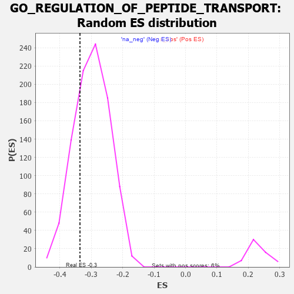

| | | Dataset | 7d |
| Phenotype | NoPhenotypeAvailable |
| Upregulated in class | na_neg |
| GeneSet | GO_REGULATION_OF_PEPTIDE_TRANSPORT |
| Enrichment Score (ES) | -0.33614117 |
| Normalized Enrichment Score (NES) | -1.1254233 |
| Nominal p-value | 0.26354942 |
| FDR q-value | 0.73059237 |
| FWER p-Value | 1.0 |
Table: GSEA Results Summary
 Fig 1: Enrichment plot: GO_REGULATION_OF_PEPTIDE_TRANSPORT
Fig 1: Enrichment plot: GO_REGULATION_OF_PEPTIDE_TRANSPORT
Profile of the Running ES Score & Positions of GeneSet Members on the Rank Ordered List
| PROBE | GENE SYMBOL | GENE_TITLE | RANK IN GENE LIST | RANK METRIC SCORE | RUNNING ES | CORE ENRICHMENT | | 1 | TGFB3 | | | 49 | 2.654 | 0.0241 | No |
| 2 | RAC2 | | | 60 | 2.442 | 0.0507 | No |
| 3 | IRS1 | | | 98 | 1.659 | 0.0650 | No |
| 4 | ADCY8 | | | 124 | 1.418 | 0.0780 | No |
| 5 | RHOU | | | 210 | 1.031 | 0.0789 | No |
| 6 | DPH3 | | | 287 | 0.844 | 0.0789 | No |
| 7 | CNST | | | 317 | 0.792 | 0.0842 | No |
| 8 | GSK3A | | | 351 | 0.745 | 0.0885 | No |
| 9 | SUFU | | | 443 | 0.665 | 0.0845 | No |
| 10 | LRP1 | | | 470 | 0.648 | 0.0886 | No |
| 11 | NUP54 | | | 505 | 0.627 | 0.0914 | No |
| 12 | HTRA2 | | | 527 | 0.621 | 0.0958 | No |
| 13 | GLMN | | | 632 | 0.583 | 0.0892 | No |
| 14 | NSUN2 | | | 901 | 0.506 | 0.0607 | No |
| 15 | WLS | | | 907 | 0.505 | 0.0658 | No |
| 16 | ZPR1 | | | 967 | 0.491 | 0.0639 | No |
| 17 | SRC | | | 1128 | 0.459 | 0.0487 | No |
| 18 | UBL5 | | | 1162 | 0.452 | 0.0496 | No |
| 19 | RFX3 | | | 1171 | 0.451 | 0.0537 | No |
| 20 | TFDP1 | | | 1180 | 0.450 | 0.0579 | No |
| 21 | PARL | | | 1290 | 0.432 | 0.0489 | No |
| 22 | EXOC1 | | | 1403 | 0.409 | 0.0392 | No |
| 23 | INHBB | | | 1514 | 0.388 | 0.0296 | No |
| 24 | XPO4 | | | 1518 | 0.388 | 0.0336 | No |
| 25 | ERP29 | | | 1589 | 0.376 | 0.0290 | No |
| 26 | DERL2 | | | 1632 | 0.368 | 0.0278 | No |
| 27 | XPO5 | | | 1700 | 0.357 | 0.0233 | No |
| 28 | LRP5 | | | 1769 | 0.342 | 0.0186 | No |
| 29 | NUP58 | | | 1787 | 0.340 | 0.0203 | No |
| 30 | THOC2 | | | 1796 | 0.338 | 0.0231 | No |
| 31 | NUP62 | | | 1871 | 0.324 | 0.0173 | No |
| 32 | BRSK2 | | | 1979 | 0.308 | 0.0072 | No |
| 33 | DMAP1 | | | 2025 | 0.301 | 0.0049 | No |
| 34 | KCNC2 | | | 2075 | 0.295 | 0.0020 | No |
| 35 | SYK | | | 2186 | 0.278 | -0.0089 | No |
| 36 | C2CD5 | | | 2204 | 0.276 | -0.0079 | No |
| 37 | REST | | | 2308 | 0.259 | -0.0181 | No |
| 38 | BCAS3 | | | 2352 | 0.253 | -0.0208 | No |
| 39 | MIF | | | 2357 | 0.252 | -0.0184 | No |
| 40 | PPID | | | 2376 | 0.249 | -0.0178 | No |
| 41 | SAE1 | | | 2390 | 0.247 | -0.0167 | No |
| 42 | UBAC2 | | | 2488 | 0.229 | -0.0265 | No |
| 43 | HUWE1 | | | 2506 | 0.225 | -0.0261 | No |
| 44 | TLR1 | | | 2517 | 0.224 | -0.0248 | No |
| 45 | NUMB | | | 2519 | 0.224 | -0.0223 | No |
| 46 | BAG3 | | | 2620 | 0.209 | -0.0327 | No |
| 47 | LMAN1 | | | 2743 | 0.192 | -0.0461 | No |
| 48 | PPIA | | | 2754 | 0.190 | -0.0452 | No |
| 49 | RIOK2 | | | 2775 | 0.187 | -0.0457 | No |
| 50 | SCFD1 | | | 2783 | 0.185 | -0.0444 | No |
| 51 | PDCD5 | | | 2885 | 0.169 | -0.0554 | No |
| 52 | XPO1 | | | 2960 | 0.156 | -0.0631 | No |
| 53 | ANO1 | | | 2982 | 0.152 | -0.0641 | No |
| 54 | CHP1 | | | 3089 | 0.138 | -0.0760 | No |
| 55 | AIMP1 | | | 3105 | 0.136 | -0.0764 | No |
| 56 | EDEM2 | | | 3145 | 0.131 | -0.0799 | No |
| 57 | PSMD9 | | | 3179 | 0.125 | -0.0827 | No |
| 58 | RBM22 | | | 3182 | 0.125 | -0.0815 | No |
| 59 | SMAD3 | | | 3303 | 0.105 | -0.0957 | No |
| 60 | RAB8A | | | 3319 | 0.102 | -0.0964 | No |
| 61 | CDK5 | | | 3480 | 0.080 | -0.1160 | No |
| 62 | UFM1 | | | 3506 | 0.077 | -0.1183 | No |
| 63 | UBR5 | | | 3518 | 0.074 | -0.1188 | No |
| 64 | HDAC3 | | | 3528 | 0.072 | -0.1192 | No |
| 65 | NOLC1 | | | 3623 | 0.056 | -0.1306 | No |
| 66 | ACSL4 | | | 3632 | 0.055 | -0.1310 | No |
| 67 | FIS1 | | | 3654 | 0.051 | -0.1331 | No |
| 68 | DHX9 | | | 3693 | 0.044 | -0.1374 | No |
| 69 | NF1 | | | 3713 | 0.040 | -0.1394 | No |
| 70 | SYT11 | | | 3732 | 0.036 | -0.1413 | No |
| 71 | IFIH1 | | | 3919 | 0.006 | -0.1650 | No |
| 72 | PPM1A | | | 3953 | 0.002 | -0.1692 | No |
| 73 | VPS35 | | | 3989 | -0.006 | -0.1736 | No |
| 74 | DDX58 | | | 3998 | -0.007 | -0.1745 | No |
| 75 | HNF4A | | | 4157 | -0.034 | -0.1944 | No |
| 76 | PDX1 | | | 4179 | -0.038 | -0.1966 | No |
| 77 | ENY2 | | | 4195 | -0.041 | -0.1981 | No |
| 78 | VPS11 | | | 4202 | -0.041 | -0.1983 | No |
| 79 | ARL2 | | | 4254 | -0.050 | -0.2043 | No |
| 80 | RAN | | | 4299 | -0.059 | -0.2092 | No |
| 81 | SAR1A | | | 4304 | -0.060 | -0.2091 | No |
| 82 | BAG4 | | | 4314 | -0.061 | -0.2095 | No |
| 83 | PRR5L | | | 4418 | -0.080 | -0.2218 | No |
| 84 | SETD2 | | | 4443 | -0.084 | -0.2239 | No |
| 85 | LRRK2 | | | 4467 | -0.087 | -0.2258 | No |
| 86 | VPS28 | | | 4582 | -0.114 | -0.2391 | No |
| 87 | SYT4 | | | 4590 | -0.116 | -0.2387 | No |
| 88 | ADTRP | | | 4612 | -0.120 | -0.2400 | No |
| 89 | ITPR1 | | | 4661 | -0.130 | -0.2446 | No |
| 90 | ARF6 | | | 4704 | -0.140 | -0.2484 | No |
| 91 | FBXW7 | | | 4816 | -0.161 | -0.2608 | No |
| 92 | DRD2 | | | 5088 | -0.221 | -0.2929 | No |
| 93 | ITSN1 | | | 5094 | -0.222 | -0.2910 | No |
| 94 | DOC2B | | | 5113 | -0.229 | -0.2907 | No |
| 95 | SMO | | | 5195 | -0.247 | -0.2982 | No |
| 96 | IPO5 | | | 5207 | -0.248 | -0.2968 | No |
| 97 | CDK1 | | | 5264 | -0.262 | -0.3009 | No |
| 98 | PICK1 | | | 5265 | -0.263 | -0.2979 | No |
| 99 | NPY2R | | | 5331 | -0.281 | -0.3030 | No |
| 100 | ITPR3 | | | 5361 | -0.288 | -0.3035 | No |
| 101 | FZD5 | | | 5386 | -0.292 | -0.3032 | No |
| 102 | CPT1A | | | 5467 | -0.311 | -0.3099 | No |
| 103 | EDEM1 | | | 5541 | -0.331 | -0.3154 | No |
| 104 | SIDT2 | | | 5542 | -0.331 | -0.3116 | No |
| 105 | NUCB1 | | | 5579 | -0.340 | -0.3123 | No |
| 106 | CASP8 | | | 5678 | -0.369 | -0.3206 | No |
| 107 | MTCL1 | | | 5697 | -0.374 | -0.3187 | No |
| 108 | ENSA | | | 5739 | -0.388 | -0.3195 | No |
| 109 | TLR2 | | | 5761 | -0.395 | -0.3176 | No |
| 110 | VAMP7 | | | 5777 | -0.399 | -0.3150 | No |
| 111 | ABCG1 | | | 5778 | -0.399 | -0.3104 | No |
| 112 | CDK16 | | | 5869 | -0.425 | -0.3171 | No |
| 113 | SYT9 | | | 5992 | -0.469 | -0.3273 | No |
| 114 | GCC2 | | | 5994 | -0.470 | -0.3221 | No |
| 115 | XBP1 | | | 6011 | -0.475 | -0.3187 | No |
| 116 | RAC1 | | | 6036 | -0.484 | -0.3162 | No |
| 117 | ATG13 | | | 6110 | -0.508 | -0.3198 | No |
| 118 | GOPC | | | 6167 | -0.528 | -0.3209 | No |
| 119 | CDC42 | | | 6236 | -0.548 | -0.3233 | No |
| 120 | SYTL4 | | | 6304 | -0.578 | -0.3253 | No |
| 121 | TRPM4 | | | 6390 | -0.612 | -0.3291 | Yes |
| 122 | CSK | | | 6428 | -0.630 | -0.3267 | Yes |
| 123 | DPP4 | | | 6501 | -0.663 | -0.3283 | Yes |
| 124 | VAMP2 | | | 6525 | -0.672 | -0.3235 | Yes |
| 125 | CLN3 | | | 6580 | -0.699 | -0.3224 | Yes |
| 126 | ARF1 | | | 6583 | -0.701 | -0.3147 | Yes |
| 127 | TPR | | | 6597 | -0.709 | -0.3082 | Yes |
| 128 | MPC2 | | | 6683 | -0.753 | -0.3105 | Yes |
| 129 | PAK1 | | | 6691 | -0.757 | -0.3027 | Yes |
| 130 | EGFR | | | 6708 | -0.765 | -0.2960 | Yes |
| 131 | GSK3B | | | 6719 | -0.768 | -0.2885 | Yes |
| 132 | ADAM9 | | | 6808 | -0.819 | -0.2904 | Yes |
| 133 | DISP1 | | | 6928 | -0.887 | -0.2955 | Yes |
| 134 | SNX3 | | | 6934 | -0.893 | -0.2859 | Yes |
| 135 | GHSR | | | 6937 | -0.894 | -0.2759 | Yes |
| 136 | DNM1L | | | 6963 | -0.913 | -0.2687 | Yes |
| 137 | PIM3 | | | 6964 | -0.914 | -0.2582 | Yes |
| 138 | MYH10 | | | 7048 | -0.966 | -0.2578 | Yes |
| 139 | CFTR | | | 7143 | -1.030 | -0.2581 | Yes |
| 140 | CIB1 | | | 7280 | -1.152 | -0.2623 | Yes |
| 141 | MYRIP | | | 7443 | -1.323 | -0.2679 | Yes |
| 142 | KCNB1 | | | 7444 | -1.327 | -0.2527 | Yes |
| 143 | CD22 | | | 7534 | -1.449 | -0.2475 | Yes |
| 144 | IWS1 | | | 7613 | -1.587 | -0.2393 | Yes |
| 145 | MCU | | | 7644 | -1.637 | -0.2244 | Yes |
| 146 | ANK3 | | | 7690 | -1.740 | -0.2103 | Yes |
| 147 | RNF31 | | | 7744 | -1.895 | -0.1954 | Yes |
| 148 | TRAF6 | | | 7818 | -2.157 | -0.1801 | Yes |
| 149 | TCAF2 | | | 7854 | -2.428 | -0.1568 | Yes |
| 150 | TRAF2 | | | 7861 | -2.481 | -0.1292 | Yes |
| 151 | FYN | | | 7881 | -2.622 | -0.1016 | Yes |
| 152 | TCAF1 | | | 7901 | -2.803 | -0.0720 | Yes |
| 153 | ARRB1 | | | 7935 | -3.377 | -0.0375 | Yes |
| 154 | PASK | | | 7946 | -3.674 | 0.0032 | Yes |
Table: GSEA details [plain text format]

Fig 2: GO_REGULATION_OF_PEPTIDE_TRANSPORT: Random ES distribution
Gene set null distribution of ES for GO_REGULATION_OF_PEPTIDE_TRANSPORT